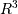

numpy.cross¶
- numpy.cross(a, b, axisa=-1, axisb=-1, axisc=-1, axis=None)[source]¶
Return the cross product of two (arrays of) vectors.
The cross product of a and b in  is a vector perpendicular to both a and b. If a and b are arrays of vectors, the vectors are defined by the last axis of a and b by default, and these axes can have dimensions 2 or 3. Where the dimension of either a or b is 2, the third component of the input vector is assumed to be zero and the cross product calculated accordingly. In cases where both input vectors have dimension 2, the z-component of the cross product is returned.
Parameters : a : array_like
Components of the first vector(s).
b : array_like
Components of the second vector(s).
axisa : int, optional
Axis of a that defines the vector(s). By default, the last axis.
axisb : int, optional
Axis of b that defines the vector(s). By default, the last axis.
axisc : int, optional
Axis of c containing the cross product vector(s). By default, the last axis.
axis : int, optional
If defined, the axis of a, b and c that defines the vector(s) and cross product(s). Overrides axisa, axisb and axisc.
Returns : c : ndarray
Vector cross product(s).
Raises : ValueError
When the dimension of the vector(s) in a and/or b does not equal 2 or 3.
Examples
Vector cross-product.
>>> x = [1, 2, 3] >>> y = [4, 5, 6] >>> np.cross(x, y) array([-3, 6, -3])
One vector with dimension 2.
>>> x = [1, 2] >>> y = [4, 5, 6] >>> np.cross(x, y) array([12, -6, -3])
Equivalently:
>>> x = [1, 2, 0] >>> y = [4, 5, 6] >>> np.cross(x, y) array([12, -6, -3])
Both vectors with dimension 2.
>>> x = [1,2] >>> y = [4,5] >>> np.cross(x, y) -3
Multiple vector cross-products. Note that the direction of the cross product vector is defined by the right-hand rule.
>>> x = np.array([[1,2,3], [4,5,6]]) >>> y = np.array([[4,5,6], [1,2,3]]) >>> np.cross(x, y) array([[-3, 6, -3], [ 3, -6, 3]])
The orientation of c can be changed using the axisc keyword.
>>> np.cross(x, y, axisc=0) array([[-3, 3], [ 6, -6], [-3, 3]])
Change the vector definition of x and y using axisa and axisb.
>>> x = np.array([[1,2,3], [4,5,6], [7, 8, 9]]) >>> y = np.array([[7, 8, 9], [4,5,6], [1,2,3]]) >>> np.cross(x, y) array([[ -6, 12, -6], [ 0, 0, 0], [ 6, -12, 6]]) >>> np.cross(x, y, axisa=0, axisb=0) array([[-24, 48, -24], [-30, 60, -30], [-36, 72, -36]])